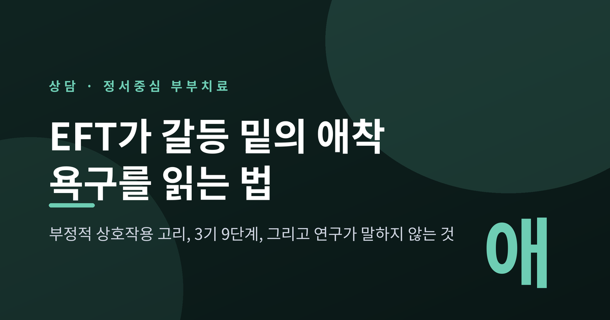
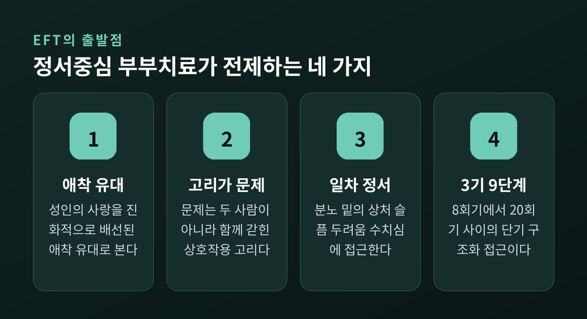
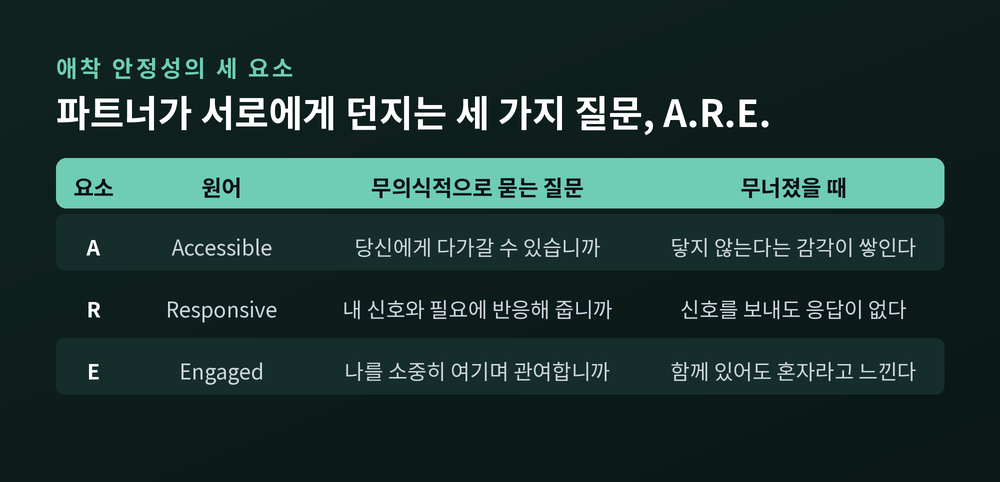
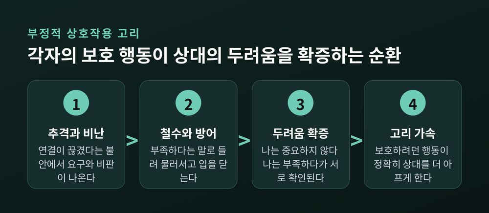
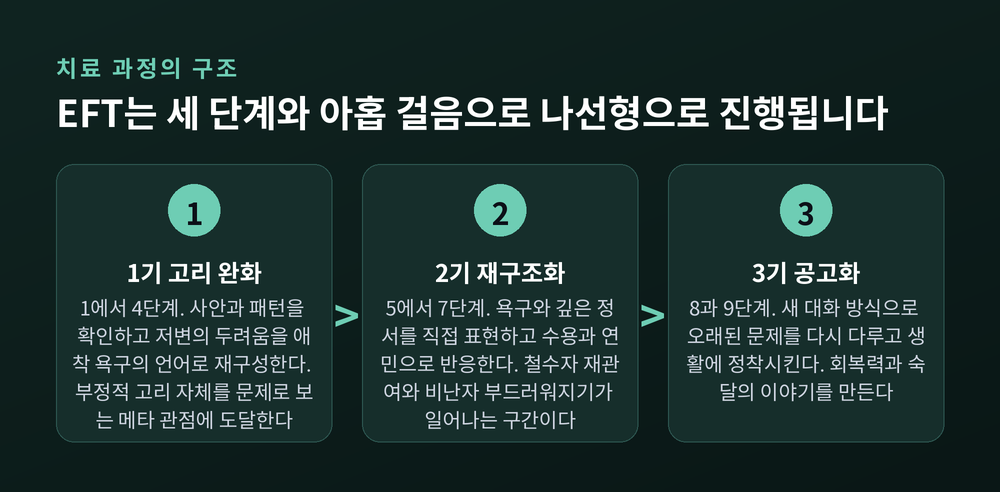
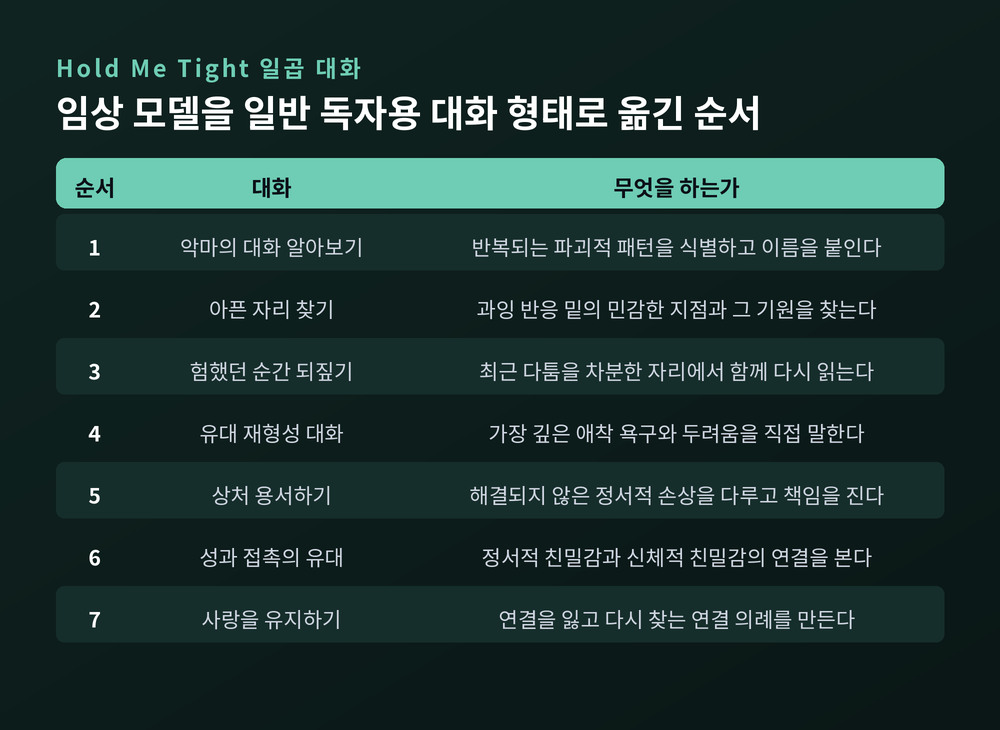
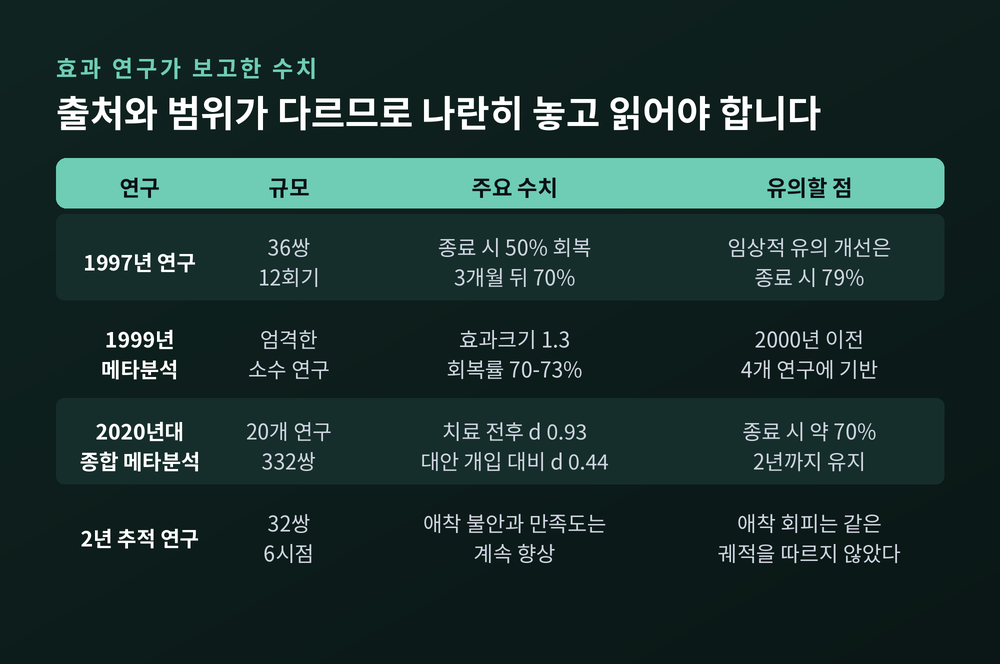

부정적 상호작용 고리, 3기 9단계, 유대 재형성 대화 - 그리고 연구가 말하지 않는 것

이번 글에서는 정서중심 부부치료(EFT)가 부부 갈등을 어떤 원리로 읽어내는지 정리해 보겠습니다. 싸움의 내용이 아니라 싸움의 구조를 보는 접근입니다. 무엇을 전제하고, 어떤 순서를 밟으며, 연구가 어디까지 확인해 주었는지를 차례로 살펴보겠습니다.
세 줄 요약

부부상담에서 다루는 다툼의 소재는 대개 비슷합니다. 돈, 시간, 가사, 양육, 시가와 처가. 그런데 같은 소재로 싸우는 두 부부가 있어도 한쪽은 한 시간 만에 정리하고 다른 쪽은 십 년째 같은 자리를 맴돕니다. 소재가 원인이라면 이 차이는 설명되지 않습니다.
정서중심 부부치료는 여기서 시선을 옮깁니다. 무엇을 두고 싸우는가가 아니라, 싸울 때 두 사람이 어떤 순서로 움직이는가를 봅니다.
이 모델은 1980년대에 캐나다의 심리학자 수 존슨(Sue Johnson)이 레슬리 그린버그(Les Greenberg)와 함께 만들었습니다. 만들어진 과정이 흥미롭습니다. 두 사람은 이론에서 방법을 연역하지 않았습니다. 실제 부부치료 회기 영상을 반복해 검토하고 과제 분석을 수행해, 어떤 순간이 실제 변화로 이어지는지를 거꾸로 추출했습니다.
당시 부부치료의 주류는 의사소통 기술 훈련과 문제해결 훈련이었습니다. 존슨은 그 모든 접근에서 정서가 빠져 있다는 점을 문제 삼았습니다. 정서를 다루기 까다로운 방해물로 보지 않고, 변화가 지나가는 통로로 삼은 것이 출발점입니다.
국제 공인 기관인 ICEEFT의 공식 설명에 따르면 부부 대상 EFT(EFCT)는 8회기에서 20회기 사이의 단기 구조화 접근입니다. 정서 경험을 재구성하는 인본주의적·경험적 접근과 상호작용을 수정하는 체계론적 접근을 결합한 형태입니다.
EFT의 이론적 뿌리는 존 볼비의 애착이론입니다. 유아와 양육자 사이의 정서적 유대를 설명하던 틀을, 성인의 낭만적 관계에 그대로 가져왔습니다.
학술적 다리를 놓은 연구는 하잔과 셰이버가 1987년 『성격 및 사회심리학회지』에 발표한 논문입니다. 이 연구는 낭만적 사랑을 유아기의 애착 형성과 동일한 생물사회적 과정으로 개념화했습니다. 에인스워스가 유아 연구에서 제안한 세 범주, 곧 안정·회피·불안양가를 성인의 애착 유형에 적용했고, 그 연속성의 근거로 볼비의 내적 작동 모델을 들었습니다.
이 전환이 함의하는 바는 작지 않습니다. 성인의 사랑이 생존 행동으로 진화적으로 배선된 애착 유대라면, 관계의 고통은 성격 차이나 기술 부족의 문제가 아니라 애착 고통이 됩니다. 내가 기대는 사람이 안정적으로 곁에 있고 반응해 주지 않는다는 공포 말입니다.
존슨은 파트너가 서로에게 무의식적으로 던지는 세 가지 질문을 A.R.E.라는 머리글자로 정리했습니다.
| 축 | 원어 | 질문 |
|---|---|---|
| A | Accessible | 당신에게 다가갈 수 있습니까 |
| R | Responsive | 내 신호와 필요에 반응해 줍니까 |
| E | Engaged | 나를 소중히 여기며 관여하고 있습니까 |
세 질문에 "그렇다"는 답이 성립하면 안정 유대가 만들어집니다. 그때 부부는 공황 없이 의견 차이를 견딥니다. 반대로 이 답이 흔들리면 사소한 어긋남도 큰 갈등으로 번집니다.

존슨은 이 상태에서 일어나는 깊은 공포를 원초적 공황이라 불렀습니다. 그래서 EFT는 의사소통 기술만 가르치는 방식에 회의적입니다. 유대가 상한 상태에서는 적극적 경청이나 타임아웃 같은 표면 처방이 오래 버티지 못한다고 보는 것입니다.
EFT는 반복되는 갈등 패턴을 부정적 상호작용 고리라 부릅니다. 존슨은 이것을 두 사람이 의식하지 못한 채 함께 추는 춤에 비유했습니다.
가장 자주 언급되는 형태는 비난과 방어가 맞물리는 구조입니다. 한쪽이 공격하면 다른 쪽이 방어하거나 거리를 둡니다. 임상 문헌에서는 이를 추격과 철수라고도 씁니다.
핵심은 이 고리가 스스로를 먹고 자란다는 점입니다. 각자의 보호 행동이 상대의 가장 깊은 두려움을 확인시켜 줍니다.
두 사람 모두 자기를 지키려 한 행동이, 정확히 상대를 가장 아프게 하는 지점을 건드립니다. 그래서 고리는 시간이 갈수록 빨라집니다.
존슨은 『Hold Me Tight』에서 이 패턴을 세 유형으로 나눕니다. 서로를 탓하는 상호 공격(나쁜 놈 찾기), 한쪽은 요구하고 한쪽은 물러서는 추격과 후퇴의 춤(항의의 폴카), 그리고 양쪽 모두 닫히고 멀어지는 상태(얼어붙고 달아나기)입니다. 마지막 유형이 관계가 가장 소진된 단계로 묘사됩니다.

여기서 EFT의 정서 구분이 들어옵니다. 겉으로 드러나는 분노·경멸·짜증은 이차 정서입니다. 그 아래에 의식에서 차단된 일차 정서가 있습니다. 상처, 슬픔, 두려움, 수치심 같은 것들입니다.
그래서 치료자가 던지는 재구성은 이렇게 요약됩니다. 문제는 당신의 성격도, 두 사람의 차이도 아니고, 두 사람이 갇혀 있는 제약된 춤이라는 것입니다.
존슨은 이 민감한 지점을 아픈 자리(raw spots)라고 불렀습니다. 과거의 상처에서 비롯되어, 잊힌 문자 한 통이나 퉁명스러운 말투처럼 작은 신호에도 사건의 크기를 훨씬 넘어서는 고통이 촉발되는 자리입니다.
EFT는 세 단계(기)와 아홉 걸음(단계)으로 구조화되어 있습니다. 순서는 정해져 있지만 직선으로 가지는 않습니다. 존슨은 이 과정이 나선형으로 진행된다고 설명했고, 진행 속도는 관계의 고통 수준에 따라 달라진다고 덧붙였습니다.
1기 — 고리의 단계적 완화 (1~4단계)
핵심 우려 사안을 확인하고(1단계), 그 사안이 등장할 때 나타나는 상호작용 패턴을 드러냅니다(2단계). 이어서 그 패턴 아래에 있는, 인정되지 않은 두려움과 애착 관련 정서를 인식합니다(3단계). 마지막으로 치료자가 이 모든 것을 각자의 애착 욕구라는 언어로 재구성합니다(4단계).
1기의 도달점은 문제 해결이 아닙니다. 부부가 자신들의 상호작용을 한 발 떨어져 바라보는 메타 관점을 얻고, 부정적 고리 그 자체를 문제로 보기 시작하는 것입니다.
2기 — 상호작용의 재구조화 (5~7단계)
각자가 자신의 원함과 필요, 깊은 정서를 목소리로 냅니다(5단계). 상대의 욕구와 정서에 수용과 연민을 표현하는 법을 익힙니다(6단계). 그런 다음 평소 갈등을 일으키던 사안을 새로운 방식으로 논의합니다(7단계).
이 단계의 중심 기법은 실연(enactment)입니다. 치료자가 안전한 틀 안에서 두 사람의 직접 대화를 연출합니다. 치료자에게 말하는 것이 아니라 서로에게 말하게 하는 것이 요점입니다.
3기 — 통합과 공고화 (8~9단계)
새로 만들어진 대화 방식으로 오래된 문제를 다시 다루고, 회기 밖에서 연습하며, 새 패턴을 생활에 정착시킬 계획을 세웁니다. 이 단계의 목표를 연구 문헌은 관계에 대한 회복력과 숙달의 이야기를 만들어 내는 것이라고 표현합니다.

치료자의 자리도 분명합니다. EFT에서 치료자는 과정 자문가입니다. 조언자나 심판이 아닙니다. 각 파트너에게 공감적으로 조율하고 그 경험을 타당화함으로써 안전한 자리를 만드는 역할입니다.
변화 이론도 여기에 맞물립니다. EFT는 변화가 통찰이나 카타르시스, 기술 향상 그 자체에서 온다고 보지 않습니다. 새로운 정서 경험을 형성하고 표현하는 일이 상호작용의 성격을 바꾼다고 봅니다. 순서가 반대인 셈입니다.
연구 문헌은 2기에서 일어나는 두 가지 사건을 핵심 변화 사건으로 지목합니다.
첫째는 철수자 재관여입니다. 갈등이 생기면 관여를 피하던 쪽이, 이제 자신의 애착 욕구를 분명히 표현하고 상대에게 열리기 시작하는 장면입니다.
둘째는 비난자 부드러워지기입니다. 비난과 비판으로 상대를 추격하던 쪽이, 그 아래 있던 상처·슬픔·두려움·수치심을 부드럽지만 분명하게 표현하기 시작합니다. 요구가 아니라 초대의 형태로 말이지요.
이 두 장면이 접촉과 돌봄이라는 새로운 고리를 만듭니다. 흥미로운 것은 연구 결과입니다. 비난자 부드러워지기 사건은 성공적 치료 성과와 부정적 고리의 전환을 예측하는 것으로 확인됐습니다.
반면 초기의 정서 자각이나 정서 통제 수준, 관계 특정 애착의 불안·회피 수준은 이 사건의 발생 여부를 예측하지 못했습니다. 상담 전 상태로 결과를 미리 재단하기 어렵다는 뜻이기도 합니다. 다만 부드러워지기가 일어난 부부 중에서도, 초기 애착 회피가 높았던 경우 관계 만족도 개선 폭은 더 작았습니다.
존슨은 임상 모델을 일반 독자용으로 옮긴 책 『Hold Me Tight』에서 이 과정을 일곱 개의 대화로 재구성했습니다. 고통 수준이 비교적 낮은 부부가 스스로 이해하고 연습할 수 있도록 만든 형태입니다.
일곱 대화의 흐름은 이렇습니다. 반복되는 파괴적 패턴을 알아보고, 과잉 반응 밑의 아픈 자리를 찾고, 최근 다툼을 차분한 자리에서 함께 되짚습니다. 그다음이 이 책의 제목이 된 네 번째 대화입니다.
유대 재형성 대화에서 각자는 가장 깊은 애착 욕구와 두려움을 직접 말합니다. 화 밑에 있던 것이 무엇이었는지를, 상대를 탓하지 않는 형태로 꺼내는 일입니다. 듣는 쪽은 안심과 애정으로 반응합니다.
나머지 세 대화는 해결되지 않은 상처를 다루는 용서의 대화, 정서적 친밀감과 신체적 친밀감의 연결을 다루는 대화, 그리고 연결을 유지하는 방법에 관한 대화로 이어집니다.
마지막 대화가 특히 절제되어 있습니다. 존슨은 사랑을 한 번의 성취가 아니라 정서적 연결을 잃고 다시 찾는 지속적 과정으로 규정합니다. 그래서 데이트 밤, 일상적인 확인, 인사와 재회의 의식 같은 연결 의례를 권합니다.
이 대화들의 실체는 결국 앞서 본 A.R.E.입니다. 그 순간에 접근 가능하고, 반응하고, 관여하는 것. 거창한 화법이 따로 있는 것이 아닙니다.

EFT 연구 가운데 가장 자주 인용되는 것은 2013년 『PLOS ONE』에 실린 뇌영상 연구입니다.
관계 불만족으로 선별된 부부 35쌍이 참여했습니다. 평균 23회기(범위 13~35회기)의 EFT 상담 전후로 여성 파트너의 뇌를 fMRI로 촬영했습니다. 발목 전기충격 위협을 받는 상태에서 세 조건을 비교했습니다. 홀로 누워 있을 때, 낯선 사람의 손을 잡을 때, 배우자의 손을 잡을 때입니다.
치료 전에는 세 조건 모두에서 공포 처리와 관련된 뇌 영역이 강하게 활성화됐습니다. 배우자의 손을 잡아도 마찬가지였습니다.
치료 후에는 달라졌습니다. 혼자일 때와 낯선 사람의 손을 잡을 때는 여전히 경보 반응이 나타났습니다. 그러나 배우자의 손을 잡았을 때는 신경학적 경보 반응이 유의하게 약해졌습니다. 실제로 충격이 가해졌을 때 보고한 통증도 더 낮았습니다.
논문은 이를 두고 EFT가 낭만적 파트너가 곁에 있을 때 위협 단서에 대한 뇌의 표상 자체를 바꾸었다고 기술합니다. 안전한 유대가 은유에 그치지 않는다는 근거로 읽히는 대목입니다.
다만 같은 연구에서, 손을 잡지 않은 조건에서는 자기조절과 관련된 영역의 위협 활성이 오히려 증가한 것으로 나타났습니다. 단순한 이야기는 아니라는 뜻입니다.
수치를 다룰 때는 조심할 필요가 있습니다. EFT는 비교적 근거가 두터운 부부치료 모델이지만, 널리 인용되는 숫자들의 출처가 제각각이기 때문입니다.
확인된 수치들
효과크기가 1.3에서 .93으로 내려간 것을 모순으로 볼 필요는 없습니다. 포함 기준이 넓어지면 효과크기가 다소 낮아지는 것은 메타분석에서 흔한 일입니다. 오히려 후자가 더 현실에 가까운 추정치일 가능성이 큽니다.
같은 메타분석에서 눈에 띄는 발견이 하나 더 있습니다. 치료자가 모델에 충실할수록 부부의 향상 폭도 컸다는 점입니다. 방법 자체만큼이나 그 방법을 제대로 익힌 사람이 중요하다는 이야기입니다.
장기 데이터는 결이 조금 다릅니다. 32쌍을 2년간 여섯 시점에 걸쳐 추적한 연구에서, 애착 불안과 안전기지 사용, 관계 만족도는 치료 후에도 계속 향상됐습니다. 그런데 애착 회피는 같은 궤적을 따르지 않았습니다. 회피는 상담 중에 개선되더라도 그 뒤로 계속 좋아지지는 않을 가능성이 제기됐습니다.
집단 교육 프로그램 형태로 운영한 연구에서도 비슷한 단서가 보입니다. 북미 16개 집단 95쌍을 조사한 결과 관계 만족도는 집단 종료 시점에 큰 폭으로 향상됐지만(d = .81), 3~6개월 뒤 추적에서는 다시 하락했습니다. 애착과 친밀감 지표에서는 유의한 변화가 없었습니다.

한 가지 덧붙이자면, 인터넷에서 자주 보이는 "성공률 90%" 같은 수치는 1차 출처를 확인하기 어려웠습니다. 이번 정리에서는 사용하지 않았습니다.
모든 관계에 적용되는 방법은 아닙니다. 이 부분은 분명히 짚고 넘어가야 합니다.
임상 문헌은 진행 중인 신체적 폭력과 진행 중인 외도를 부부 대상 EFT의 금기로 봅니다. 이 모델은 정서적 안전과 관계를 유지하려는 최소한의 의지를 전제하기 때문입니다. 접수 면접에서 이런 고위험 요인이 확인되면 개인치료나 안전 중심 개입으로 의뢰하도록 권고합니다. ICEEFT의 공식 인증 기준에도 치료자의 기본 역량으로 "위험과 맥락, 금기사항 평가"가 명시되어 있습니다.
심각하게 기능이 손상된 개인, 이미 별거나 이혼을 결정한 경우에도 이 모델이 설계된 적용 범위를 벗어납니다.
친밀한 파트너 폭력을 둘러싼 논의는 학계 안에서도 결론이 나지 않았습니다. 2020년 『Family Process』에 실린 논문은 갈등 상황에서 상호적으로 격화되는 상황적 커플 폭력과, 한쪽이 상대를 위협하고 통제하기 위해 폭력을 사용하는 친밀한 테러리즘을 구분합니다. 저자들은 전자의 경우 EFT로 안전하게 다룰 수 있다고 주장하지만, 후자는 부부치료의 명백한 금기라고 못 박습니다. 같은 논문이 서문에서 이 분야에 오랜 논쟁이 있어 왔음을 인정하고, 자신들이 제안한 방법의 한계도 함께 논의합니다.
이론적 비판도 있습니다. 정서조절이 치료적 변화의 핵심이라는 EFT의 전제 자체에 동의하지 않는 연구자들이 있습니다. 변화의 핵심은 기대한 패턴과 실제 경험한 패턴 사이의 불일치이며, 이는 정서가 아니라 학습과 과거 경험에 기반한다는 주장입니다. 더 심각한 정신건강 문제를 다루려면 추가 요인이 보완돼야 한다는 지적도 나와 있습니다.
핵심 우려가 자기 가치감이나 수치심 같은 개인 내적 문제로 추적될 때의 한계도 언급됩니다. 이 경우 파트너의 위로가 도움은 되지만 문제를 궁극적으로 해결하지는 못합니다. 개인이 자기를 보는 관점 자체가 바뀌어야 한다는 것입니다.
연구 방법론상의 제약도 있습니다. EFT 연구 대부분은 엄격한 포함·제외 기준을 둔 통제된 환경에서 수행됐습니다. 초기 연구들은 표본이 작습니다. 열 쌍, 열두 쌍 규모의 예비연구가 적지 않습니다. 그리고 지금까지 축적된 연구는 대체로 북미와 유럽 기반입니다. 한국을 포함한 동아시아 문화권에서의 효과 검증 자료는 이번 정리에서 확인하지 못했습니다.
정리하면 이렇습니다.
정서중심 부부치료는 갈등을 없애는 기술을 가르치지 않습니다. 갈등의 자리에서 무엇이 실제로 오가고 있는지를 다르게 보게 하는 접근에 가깝습니다. 예전에는 부부 문제를 대화법이 부족한 탓으로 돌리는 시각이 주류였다면, 지금은 유대의 안전함을 먼저 보는 관점이 나란히 자리를 잡았습니다.
그 관점을 한 줄로 줄이면 이렇게 됩니다.
"싸움의 내용은 표면이고, 그 아래에는 '당신 거기 있습니까'라는 질문이 있습니다."
비난과 침묵은 정반대로 보이지만, 같은 두려움의 두 얼굴일 수 있습니다. 이 사실 하나를 아는 것만으로 관계가 달라지지는 않습니다. 다만 상대를 적으로 보던 자리에서 한 걸음 물러설 여지는 생깁니다.
다만 이 글은 어디까지나 상담 이론에 대한 소개입니다. 자가 진단이나 자가 치료의 안내가 아닙니다. 지금 관계에서 힘든 시간을 보내고 계신다면, 글에 적힌 틀에 자신의 상황을 맞춰 보기보다 전문 상담사나 정신건강 전문가와 직접 상의해 보시길 권합니다. 특히 안전이 위협받는 상황이라면 부부상담보다 먼저 확인되어야 할 것이 있습니다. 그 판단은 훈련받은 전문가의 영역입니다.
관계에 필요한 것이 결국 무엇이냐고 물으신다면, 완벽한 대화법보다는 손을 내밀었을 때 잡아 줄 사람이 거기 있다는 확신이라고 답하겠습니다.